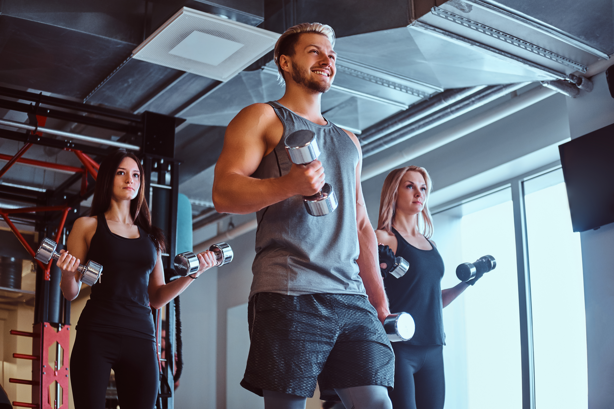

Sobre FITZONE

“El gimnasio no solo transforma tu cuerpo, también fortalece tu mente y te enseña que con disciplina, esfuerzo y constancia puedes superar cualquier límite.” 💪
¿Quiénes somos?
FITZONE es una marca dedicada a la ropa deportiva, creada para personas que buscan combinar comodidad, estilo y rendimiento durante sus actividades físicas. Queremos que cada persona se sienta segura y motivada al momento de entrenar.
Nuestra marca está inspirada en un estilo de vida activo y saludable. Por eso, buscamos ofrecer prendas modernas, cómodas y versátiles que se adapten a diferentes rutinas, desde ejercicios en el gimnasio hasta actividades al aire libre.
Nuestra misión
Nuestra misión es acompañar a nuestros clientes en cada entrenamiento, brindándoles ropa deportiva que les permita moverse con libertad y expresar su personalidad. En FITZONE creemos que cada pequeño esfuerzo cuenta y que la constancia es fundamental para alcanzar nuestros objetivos.
¿Por qué elegir FITZONE?
Elegir FITZONE significa apostar por la comodidad, el diseño y la motivación. Buscamos que nuestras prendas sean adecuadas para diferentes tipos de entrenamiento y que ayuden a nuestros clientes a sentirse cómodos mientras superan sus propios límites.
Además, creemos que la ropa deportiva no solo debe verse bien, sino también permitir que cada persona disfrute de sus actividades y mantenga una actitud positiva frente a sus metas.
Creado por
leonel Machuca Navarro